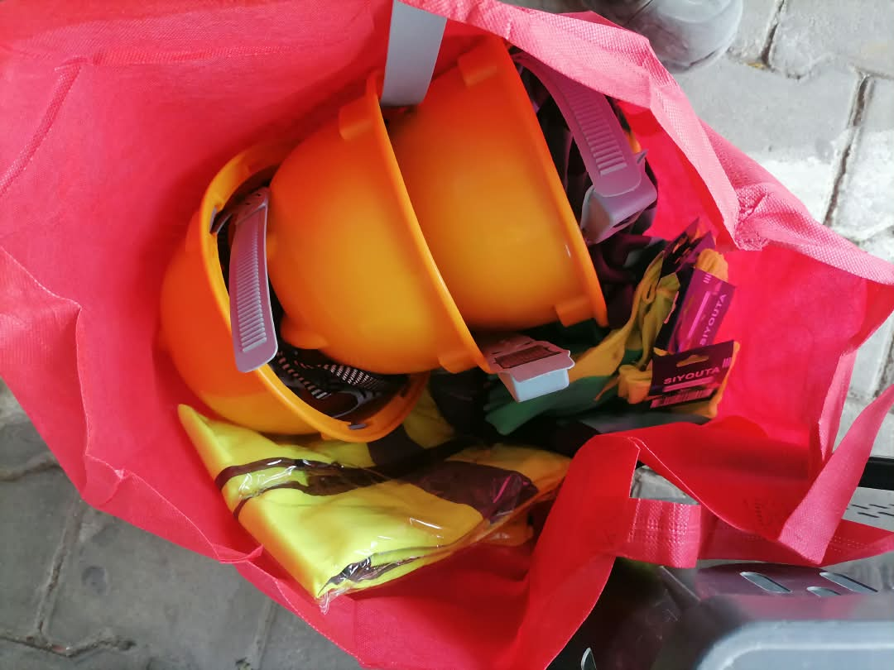

Accueil / Méthode et sécurité
Cinq phases. Un procès-verbal à la fin de chacune.
La qualité se contrôle à chaque étape et se prouve par écrit. La sécurité des personnes et la protection de l'environnement sont des conditions d'exécution, au même titre que les délais.

01 — Déroulement d'un chantier
Le maître d'œuvre suit l'avancement et valide la qualité au fil de l'eau.
- 1
Préparation
Analyse des plans et du CCTP, reconnaissance du site, implantation topographique, installation de chantier, analyse des risques.
Planning · Plan HSE · PV d'implantation
- 2
Terrassement
Décapage, déblais et remblais, mise en forme et compactage de la plateforme et des couches de forme.
PV de plateforme · Essais de portance
- 3
Assainissement
Caniveaux, buses, dalots et regards, raccordement aux exutoires.
PV de pose · Essais béton
- 4
Chaussée
Fondation et base, imprégnation, accrochage, enrobés ou enduits, pavés et bordures.
Fiches journalières · PV de compactage
- 5
Réception
Signalisation, nettoyage, repli, levée des réserves, réception provisoire.
PV de réception · Dossier des ouvrages
02 — Un exemple
La mise en œuvre d'un béton bitumineux.
Six étapes, chacune contrôlée et consignée sur la fiche journalière du chantier.

| Étape | Mode opératoire |
|---|---|
| 1. Réception du support | Contrôle de la couche de base (cotes, compacité, propreté), balayage soigné. |
| 2. Couche d'accrochage | Répandage de l'émulsion au dosage prescrit par le CCTP, attente de la rupture. |
| 3. Répandage | Mise en œuvre au finisseur, contrôle de la température à la réception et à la pose. |
| 4. Compactage | Atelier de compactage adapté (rouleau tandem, compacteur à pneus) selon la planche d'essai. |
| 5. Contrôles | Épaisseur, uni, compacité et température consignés sur fiche journalière. |
| 6. Remise en circulation | Après refroidissement suffisant et accord du maître d'œuvre. |
03 — Maîtrise de la qualité
Chaque contrôle laisse une preuve écrite.
Le plan de contrôle type ci-dessous est adapté au CCTP de chaque marché.
| Étape | Contrôle | Document de preuve |
|---|---|---|
| Réception des matériaux | Conformité aux fiches techniques, quantités livrées | Bons de livraison, certificats |
| Implantation | Cotes, alignements et pentes | PV d'implantation |
| Plateforme et couches de chaussée | Compacité et portance, par le laboratoire du client et un laboratoire indépendant mandaté par ERS-CI | PV d'essais |
| Bétons (caniveaux, dalots) | Consistance, prélèvement d'éprouvettes | PV d'écrasement |
| Enrobés | Température, épaisseur, compacité | Fiche de contrôle journalière |
| Fin de travaux | Visite contradictoire, levée des réserves | PV de réception |
Suivi et compte rendu
- Planning d'exécution validé au démarrage et mis à jour chaque semaine
- Rapport d'avancement hebdomadaire transmis au maître d'œuvre
- Participation aux réunions de chantier et diffusion des comptes rendus
- Attachements contradictoires et situations de travaux mensuelles
04 — Hygiène, sécurité, environnement
La sécurité, chaque matin.
Notre politique HSE est écrite dans un manuel de 12 chapitres, complété de 36 fiches opérationnelles (procédures, listes de contrôle, formulaires d'inspection), élaboré en s'appuyant sur les exigences de la norme ISO 45001 et sur les attentes du secteur minier.
Sur chaque chantier
- Briefing sécurité avant la prise de poste
- Casque, gilet haute visibilité, chaussures de sécurité, gants et lunettes selon la tâche
- Analyse des risques par poste de travail avant le démarrage
- Balisage des zones de travail, gestion de la circulation, protection des riverains
- Inspections régulières et registre des incidents, avec analyse des causes

| Risque | Prévention |
|---|---|
| Circulation des engins | Plan de circulation, balisage, homme-trafic, gilets haute visibilité, engins inspectés |
| Enrobés et liants chauds | Gants et chaussures adaptés, consignes de distance, personnel formé |
| Tranchées et fouilles | Talutage ou blindage selon la profondeur, balisage des bords |
| Manutention | Gestes et postures, manutention à deux ou mécanisée |
| Poussière et bruit | Arrosage des pistes, protections auditives et respiratoires |
| Chaleur | Points d'eau, pauses adaptées, surveillance des signes de coup de chaleur |
Environnement
- Tri et évacuation des déchets de chantier vers des sites autorisés
- Stockage des liants et carburants sur rétention, kit anti-pollution
- Limitation des poussières et du bruit près des habitations
- Remise en état des emprises en fin de chantier
05 — Démarche de certification
Une feuille de route vers les normes ISO.
ERS-CI n'est pas encore certifiée. La démarche est engagée, dans cet ordre :
ISO 9001:2015
Management de la qualité.
ISO 45001:2018
Santé et sécurité au travail.
ISO 14001:2015
Management environnemental.
Confiez-nous votre prochain chantier.
Nous étudions votre projet sur place, puis nous vous remettons un devis détaillé, poste par poste.